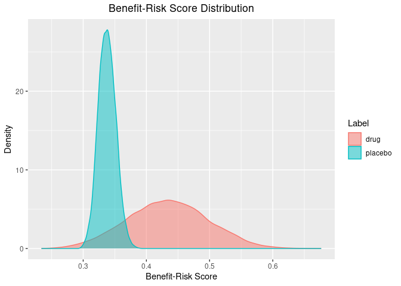
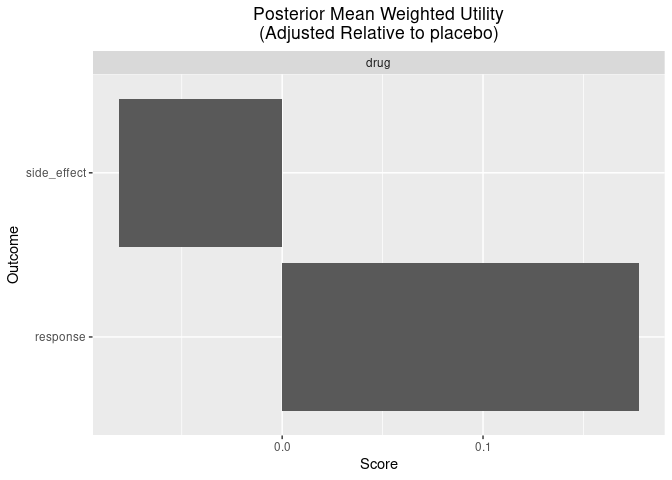

The goal of brisk is to provide general helper functions to perform quantitative Bayesian benefit-risk (brisk) analyses which are completely separate from the Bayesian analyses. The functions in brisk are intended to take samples from Bayesian posteriors as inputs, allowing users to employ whatever custom analyses are appropriate. The posteriors are then combined with utility functions and weights to provide a quantitative benefit-risk analysis.
Example
For each benefit or risk, a weight and utility function are specified. The utility function takes parameter values as inputs and outputs utility values. For a given set of parameter values for each benefit and risk, the benefit-risk score can be calculated by taking a weighted average of the utility functions. Incorporating uncertainty into the estimate through a Bayesian posterior then yields a posterior distribution on the benefit-risk score.
Benefits and risks are specified in brisk using the benefit() and risk() functions. These functions require the name of the benefit/risk, a utility function, and a weight. These utility functions and weights are then combined with samples from the posterior distributions of different groups through the br_group() function.
Suppose we have a new treatment that is being tested against a placebo for a particular disease. For this population of patients, it is determined that a response in less than 50% of patients is not very beneficial, but, above 50% response rate, there is a consistently higher benefit. Therefore a utility function is constructed to quantify this belief (higher y-axis values are better):
benefit_fun <- approxfun(c(0, 0.5, 1), c(0, 0.2, 1))
curve(benefit_fun, xlab = "Response Rate", ylab = "Benefit Utility Function")The drug is also believed to have some side effects. The side effects are considered mild, but, having more than 30% of subjects having a side effect becomes problematic, and more than 60% is particularly troubling. We construct a utility function to represent this belief (higher y-axis values are better)
risk_fun <- approxfun(c(0, 0.3, 0.6, 1), c(1, 0.9, 0.2, 0))
curve(risk_fun, xlab = "Side-Effect Rate", ylab = "Risk Utility Function")
Since the side effects are mild, we will assign greater weight on ensuring that the drug works (75%) and a lower weight on the side effects (25%). Therefore, if an arm in the clinical trial had a known “true” response rate of 60% and a side-effect rate of 10%, the benefit-risk value would be
.75 * benefit_fun(0.60) + 0.25 * risk_fun(0.10)
#> [1] 0.5116667whereas an arm with a “true” 10% benefit and 80% side-effects would have a lower score of
.75 * benefit_fun(0.10) + 0.25 * risk_fun(0.80)
#> [1] 0.055In practice, we don’t actually know the “true” response rates or side effect rates, so including uncertainty in the estimate based on the data helps us to better quantify the amount of evidence for or against a new treatment. A natural way to do this is through a Bayesian analysis. Given samples from the Bayesian posterior (based on data), we can estimate the uncertainty in the benefit-risk score of each treatment arm.
Suppose we had 100 patients each in the placebo and treatment arms of the study. Suppose that 30 responded on the placebo arm and 60 responded on the treatment arm and 3 and 40 patients had side effects on the placebo and treatment arms, respectively. Using conjugate beta-binomial Bayesian models (calls to rbeta() below), we can obtain a posterior on the benefit-risk score for each group.
library(brisk)
set.seed(1132)
out <- br(
benefit("response", benefit_fun, weight = .75),
risk("side_effect", risk_fun, weight = .25),
br_group(
label = "placebo",
response = rbeta(1e4, 1 + 30, 1 + 70),
side_effect = rbeta(1e4, 1 + 3, 1 + 97)
),
br_group(
label = "drug",
response = rbeta(1e4, 1 + 60, 1 + 40),
side_effect = rbeta(1e4, 1 + 40, 1 + 60)
)
)
head(out)
#> # A tibble: 6 × 11
#> response response_weight response_utility response_score side_effect
#> <dbl> <dbl> <dbl> <dbl> <dbl>
#> 1 0.385 0.75 0.154 0.116 0.0276
#> 2 0.311 0.75 0.124 0.0933 0.0314
#> 3 0.352 0.75 0.141 0.106 0.0631
#> 4 0.334 0.75 0.133 0.100 0.0586
#> 5 0.388 0.75 0.155 0.117 0.0184
#> 6 0.230 0.75 0.0921 0.0691 0.0438
#> # … with 6 more variables: side_effect_weight <dbl>, side_effect_utility <dbl>,
#> # side_effect_score <dbl>, label <chr>, iter <int>, total <dbl>For each benefit/risk, there is a column with the posterior parameter, the weight, the utility (given a parameter value), and the score (weight times utility). There is also a column labeling the groups (“label”) and a total benefit-risk score (“total”, which is the sum of the columns with the suffix “_score”). This output has all the information to make useful inference, but, brisk provides some useful functions to make this easier. For instance, we can very quickly get a summary of the posterior benefit-risk scores using the summary() function:
summary(out)$summary
#> # A tibble: 2 × 4
#> label mean `2.50%` `97.50%`
#> <chr> <dbl> <dbl> <dbl>
#> 1 drug 0.434 0.310 0.558
#> 2 placebo 0.338 0.312 0.366These can even be adjusted relative to a specific arm:
summary(out, reference = "placebo")$summary
#> # A tibble: 1 × 5
#> label mean `2.50%` `97.50%` reference
#> <chr> <dbl> <dbl> <dbl> <chr>
#> 1 drug 0.0960 -0.0307 0.223 placeboWe can also calculate the posterior probability of certain scores. For instance, we can calculate the probability that the difference in benefit-risk scores between the treatment and placebo arms is greater than zero (i.e. the treatment arm is better).
pbrisk(out, q = 0, reference = "placebo", direction = "upper")
#> # A tibble: 1 × 5
#> label q prob direction reference
#> <chr> <dbl> <dbl> <chr> <chr>
#> 1 drug 0 0.929 upper placeboOr, one can alternately specify probability cutoffs to obtain quantiles in a long format.
qbrisk(out, p = c(0.1, .5, .9), reference = "placebo")
#> # A tibble: 3 × 4
#> label p quantile reference
#> <chr> <dbl> <dbl> <chr>
#> 1 drug 0.1 0.0116 placebo
#> 2 drug 0.5 0.0962 placebo
#> 3 drug 0.9 0.181 placeboThere are also some useful plotting functions to plot the posterior distribution of the benefit-risk scores for each group, or relative to a group.
plot(out)
plot(out, reference = "placebo")
Lastly, there are some useful functions for plotting the posterior weighted mean utility of each benefit/risk for each group.
plot_utility(out)
plot_utility(out, reference = "placebo")
plot_utility(out, stacked = TRUE)
Additional Notes
In addition to the br() function, brisk also has an mcda() function which performs in exactly the same way as br(), except that it imposes additional constraints which are typical in the MCDA analyses (e.g. that weights sum to 1 and that observed outputs of the utility functions are constrained between 0 and 1).
Also note that the br() and mcda() functions can process an arbitrary number of benefits, risks, and groups, allowing it to handle a variety of benefit-risk analyses.